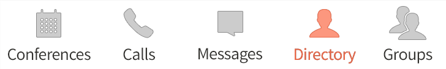
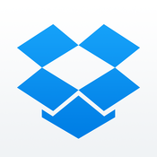
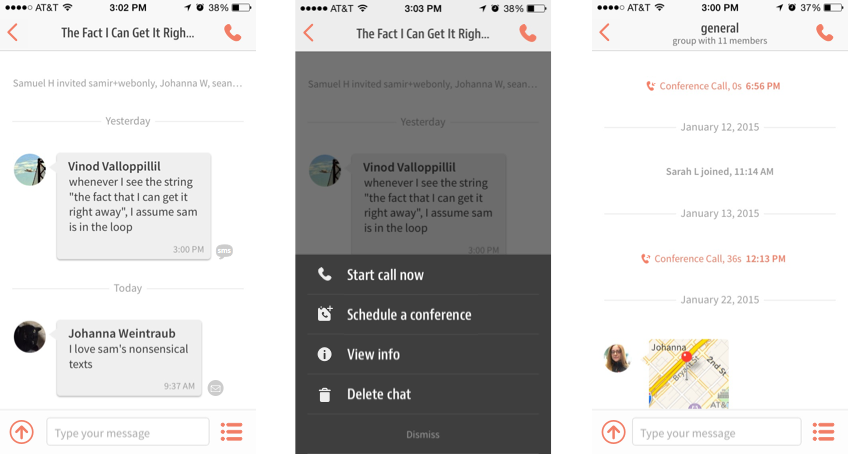
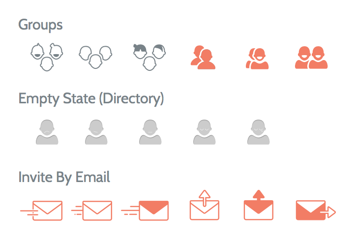
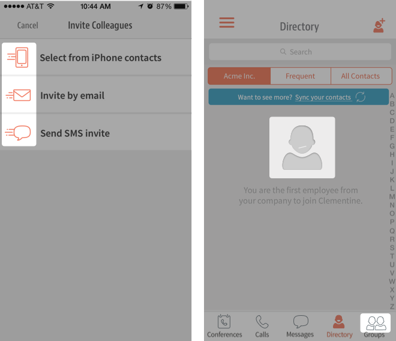
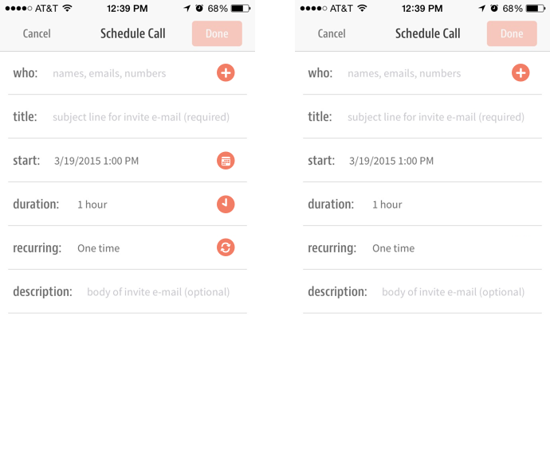
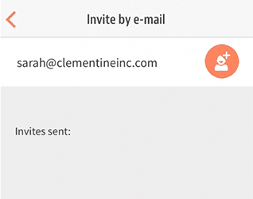
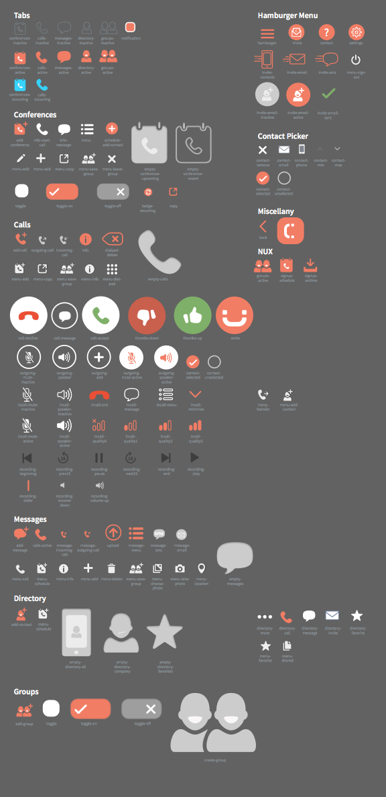
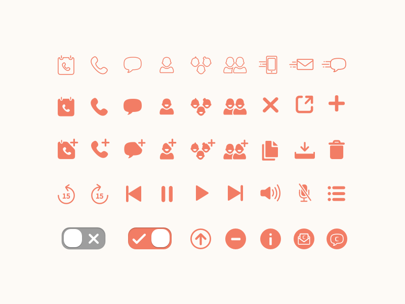

Goal
Several product sprints at Clementine had resulted in icon bloat, with different styles of icons cobbled together each time a new feature required them. A new icon set could bring visual consistency throughout the entire app and promote a greater sense of reassurance in our customers.
Revamping Clementine’s iconography started out as a simple proposal to soften corners and unify stroke widths on the app’s tab bar:

However, we knew that simply updating the tab bar wouldn’t be enough. We needed a complete overhaul of our iconography.
Keeping this in mind, I aimed for a style that would be personable but not excessively informal. I chose three words I wanted to communicate that I believe reflect Clementine’s product and brand: trustworthy, friendly, and secure.
Product Analysis
I took a broad of the product landscape and looked not only at enterprise products, but also focused on those that:
- Were used for communication or productivity.
- Relied on icons to represent a wide range of concepts and actions.
- Have very human interfaces since we at Clementine believe that that should be a cornerstone of the enterprise space.
-
 Airbnb
Airbnb -

Dropbox
-
Foursquare + Swarm
-
Shopify
-
 Slack
Slack -
Sunrise
Sketching
Sketching icons with pen and paper allowed me to more quickly explore ideas than if I had dived straight into vectors in Sketch.
A few icons I spent extra time on:
- Copy contact info to clipboard—how can I distinguish this from the share icon?
- Conferences—the team and I were still deciding on what constituted a conference (Is it scheduled? Is it a multi-person call?) and how it differed from a normal call.
- Directory & Groups—how can I make these as gender-neutral or as representative of all genders as possible?
- Invite via email/contacts/text—how can I distinguish this from our normal email, contacts, and text message icons?
Mockups

After some vector work in Sketch, I assembled the redesigned icons into their appropriate screens by overlaying them on app screenshots (icons relating to messaging can be seen above). This made it easy to get feedback from the team since everything was contextualized with real content. The mockups made it clear exactly where the icons and app needed visual and functional improvement.
I spent time iterating on icons like those for groups, empty states, and invite icons since they were challenging in terms of inclusion, tone, and increasing motivation toward an action (respectively). I focused on using the right visual tone, while keeping icons as simple, consistent, and meaningful as possible. The iterations can be seen below, along with their final form.


I also took the time to decrease our icon bloat. The conference scheduling screen (below) had icons in almost every entry field. This cluttered a screen that already forced a large amount of cognitive load on the user because of the multiple form actions required. Moreover, the icons didn’t add much utility that the text labels couldn’t already provide.

Prototyping & Final Assets
Some of the icons would be used in animated interactions, and I wanted to make sure they’d work fully before finishing up the icon set. I built out a few animations in Pixate and passed these onto our engineers.
Here’s an example animation for inviting contacts:

An important part of the icon redesign process was ensuring assets would be easy to find and replace if any further iterations were done. It was also important for our engineers to be able to quickly and easily find the assets they were looking for since there were a large number we needed to replace.
I reorganized our asset library by
- Prefixing asset names in the same tab group. For example, the names of all assets that were unique to the Messages tab began with “message-”.
- Making sure icons that shared similar forms had the same subname. For example, all icons with a speech bubble had the word “message” in their file names.
- Creating a reference sheet (below) with asset names and organized by file structure in the library for easy reference. This also made it easy to quickly edit and export assets whenever needed.

Final Design

Sample of final icons
The final set I created came out to over 100 icons (with even more for the desktop app). It primarily used Clementine’s orange and grays. The app’s previous icons often relied too much on our secondary colors alone to provide visual contrast.
I kept stroke widths and corner radii as uniform as possible across all icons to be visually consistent throughout the app. As I was redesigning the icons, others on the team were building out a universal navigation menu (which I also created icons for), and it was great seeing consistency championed in all parts of the app.
Next Steps & Lessons Learned
We heard back from our customers, who were overwhelmingly positive in their feedback. They said that the latest Clementine release with the new icons completely changed the look of the app (for good), which was exactly what we were going for.
Along the way, I
- Created a new file organization in Dropbox for design assets, screenshots, and specs to help our engineers build faster. It’s also improved the time it takes for the design team to find and share assets. A little organizational work went a long way.
- Effectively made the three brand words I relied on at the start of the project (trustworthy, friendly, secure) a key part of our product. These words were the way we began presenting our product to Clementine’s different audiences.
Starting out, I wasn’t experienced at all with creating icons. There are definitely things I would change now with how I structured vector shapes and making layer names as clean and specific as possible, especially since certain shapes are heavily reused. Things like this come back to haunt me when we need to edit and use the icons for other purposes (like an icon background for onboarding).
Now that the Clementine team’s settled on the differences between conferences and calls, and the information and feature architecture of the app has changed as a result, the icons related to those features could also use some additional care.